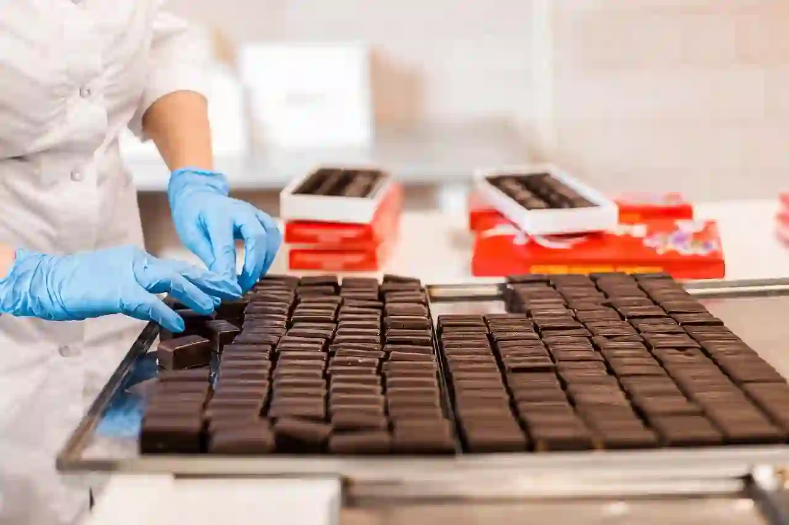
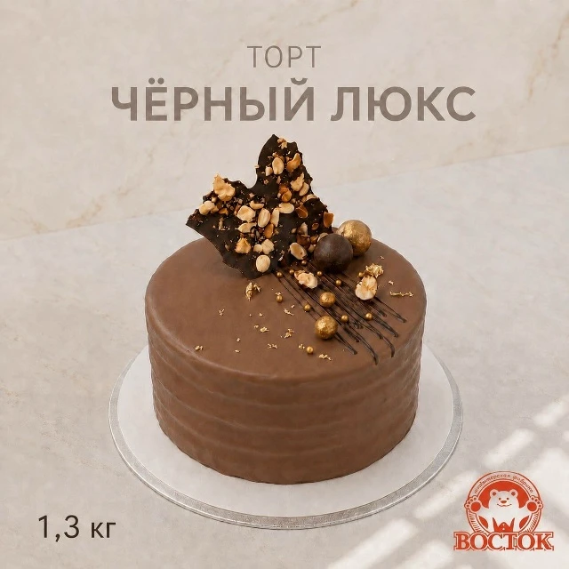
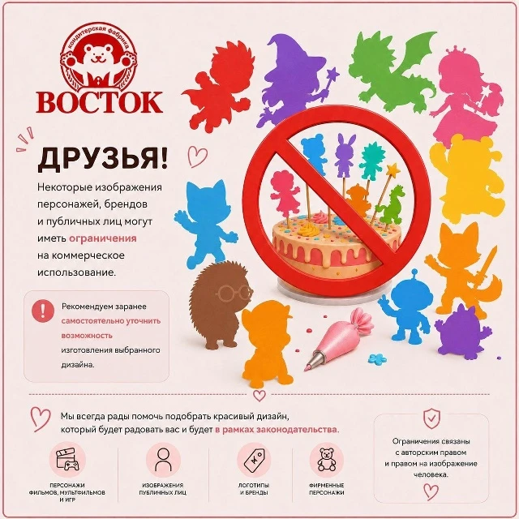
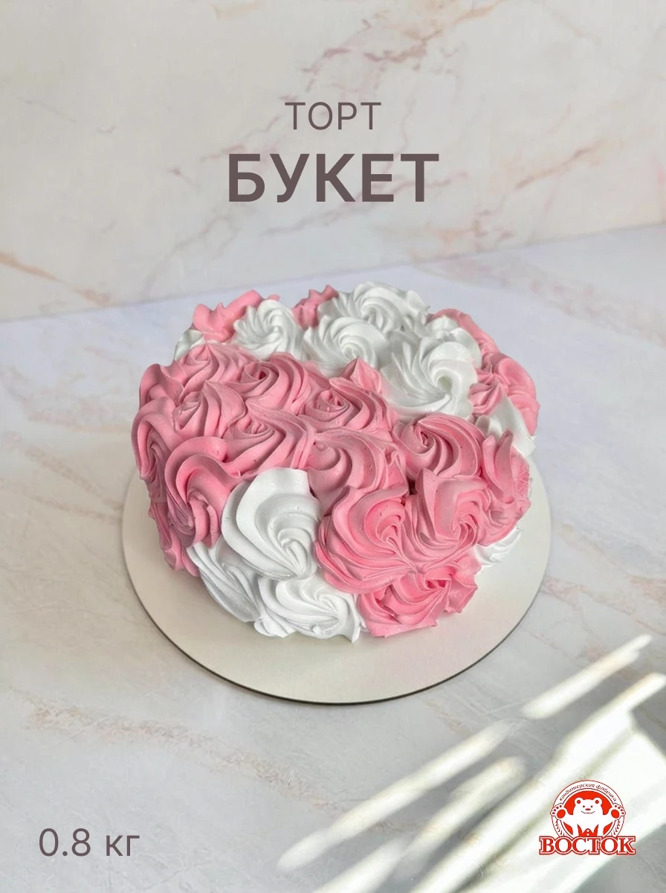
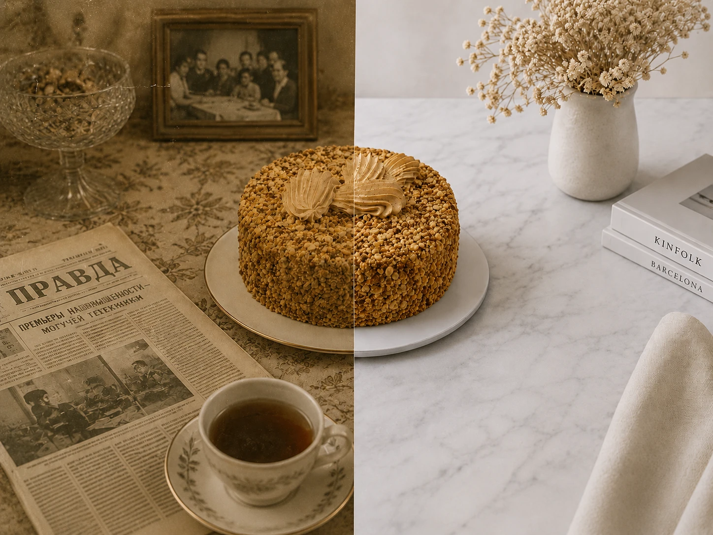
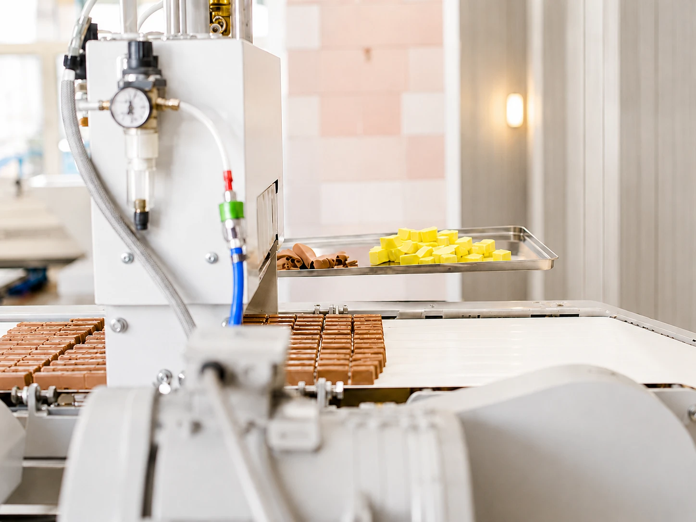

Ежедневное производство
Мы производим продукцию каждый день, соблюдая выверенные процессы и технологию. Это позволяет поддерживать стабильное качество и сохранять свежесть изделий изо дня в день.

Кондитерская фабрика «Восток» · Чита · с 1910 года
История нашего производства в Чите начинается в 1910 году, с пуска пряничного цеха. В 1964 году была основана фирма «Ингода», в состав которой вошла кондитерская фабрика «Восток». В 80-х годах фабрика стала самостоятельным предприятием и сегодня остаётся одним из старейших производств города.
В 2008 году мы провели реконструкцию с полной заменой оборудования, а в 2018-м запустили первую в Забайкальском крае конфетную линию: так появились конфеты «Кедровый грильяж», «Багульник» и «Забайкальская птичка». Неизменным остаётся одно: мы выбираем натуральные продукты и почти не используем готовые смеси и консерванты.
Новинки, сезонные торты и анонсы - каждую неделю в нашем сообществе.

Торт «Чёрный Люкс» Друзья, у нас новинка! Шоколадный бисквит с грецким орехом в сочетании со сливочным кремом на основе варёного сгущённого молока. Оформлен кремом «Шокодель» со вкусом шоколада. Вес 1,3 кг, стоимость 2 000 ₽. Ждём вас в фирменном магазине по адресу ул. Курнатовского, 18.
9 июня
Друзья! Некоторые изображения персонажей, брендов и публичных лиц могут иметь ограничения на коммерческое использование. Рекомендуем заранее уточнить возможность изготовления выбранного дизайна. Мы всегда рады помочь подобрать красивое решение, которое будет радовать вас и останется в рамках законодательства.
22 мая
Торт «Букет» Представляем продукцию к празднику 8 Марта. «Букет» - классический бисквит, прослоенный взбитыми сливками и фруктовым конфитюром со вкусом йогурта, 1 050 ₽. «Домашний» - бисквит со взбитыми сливками, 885 ₽. «Крем-Брюле» - бисквит с сахарным сиропом и сливочным кремом на варёной сгущёнке, 925 ₽. «Гурмэ» - бисквит с суфле «Птичье молоко» и сливочным кремом, 1 240 ₽. «Прага» - шоколадный бисквит на сметане со сливочно-шоколадным кремом и конфитюром «Абрикос», 760 ₽.
4 мартаЕжедневно мы производим свыше 60 наименований кондитерской продукции, сохраняя традиции нашего края. Отлаженные процессы и контроль качества на каждом этапе обеспечивают стабильный результат и широкий ассортимент каждый день. Мы регулярно обновляем линейку изделий, сохраняя узнаваемый вкус и качество.
140+
Кондитерских позиций в производстве
60+
Лет радуем вас и ваших близких
Мы производим продукцию каждый день, соблюдая выверенные процессы и технологию. Это позволяет поддерживать стабильное качество и сохранять свежесть изделий изо дня в день.


Мы сохраняем рецептуры и подход, которые знакомы и понятны нескольким поколениям. Опираясь на традиции Забайкальского края, мы развиваем их в современном производстве.
Каждый этап производства проходит проверку: от отбора сырья до выпуска готовой продукции. Это позволяет нам обеспечивать стабильный результат и уверенность в качестве.

Вся продукция доступна в нашем фирменном магазине. Ассортимент обновляется ежедневно, в наличии всегда свежие изделия.
Заказ оформляется в фирменном магазине: можно выбрать вкус и обсудить оформление. Принимаем за 3-5 рабочих дней, срок зависит от сложности изготовления.
Декор из мастики оплачивается отдельно, цена зависит от сложности выполнения
Карта временно недоступна
Если карта не открывается из-за VPN или соединения, адрес останется доступен здесь.
Пн-Сб 09:00-20:00
Вс 09:00-19:00